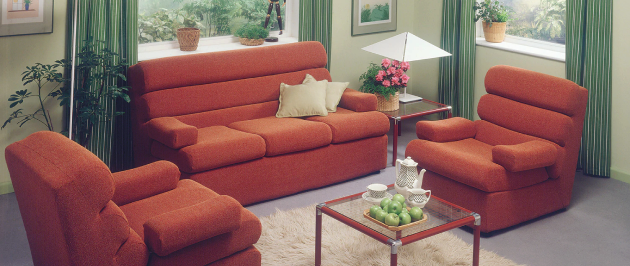
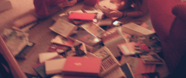
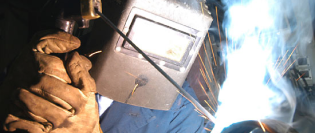
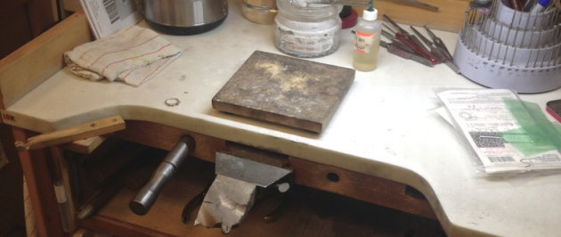
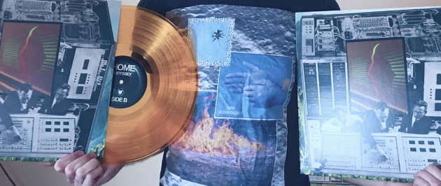
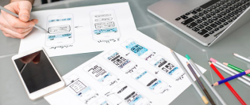

A Quick Story...
The first time I was asked to solve a design problem was when I was 9 years old. My mom wanted to rearrange our family room furniture and asked me how we should do it. Before then, this was just something she did that made me change the position I watched TV in. But to be brought into the whole decision making process, I remember feeling the weight of responsibility and power that I imagined all adults must feel. I personally would never let a 9 year old decide my furniture layout, but because of my mom’s generosity, I was opened up to the possibilities of design.
 This early realization that the world can be whatever we choose to shape it into has guided most of the rest of my life. Because we live within the consequences of past choices, I became interested in history, the social sciences and philosophy to try and understand why the present was designed the way it is. I eagerly studied these subjects at Ohio Wesleyan University, earning a bachelor’s degree along the way, and developed a lifelong passion for reading. Realizing a potential law career didn’t feel right, but knowing a bachelor’s in sociology and philosophy might not be enough to find work in recession-hit Ohio, I took a hard left and earned a technical welding certificate at Columbus State Community College. If I couldn’t design ideas to shape the future, perhaps I could at least help realize someone else’s designs for mobile broadcasting vehicles...
 I never did land a welding job, but was able to use my education and past metal working experience to get an apprenticeship at Jared the Galleria of Jewelry. This eventually turned into a 6 year long career as a bench jeweler. I’ve since repaired, refurbished, and fabricated thousands of pieces of jewelry, and helped hundreds of people design pieces for loved ones. Outside of work, a passion for music led me to start creating album cover art for underground music labels: a side project that exposed me to graphic design, A&R work, contract negotiation and communicating with people all over the world.
 I made design in one way or another a major theme of my life, but recently began to question if I was in the best medium for it. Jewelry was enjoyable work, but changes in the industry and a growing interest of customers in CAD-designed pieces made me realize it may be smart to investigate other career options. A software developer friend clued me into UX work and I was excited to learn more about the field. Discovering the possibilities of UX design led me to pursue an intensive program where I learned the design process and familiarized myself with industry expectations. I was surprised that I liked the research aspect of the field as much as the design portion, and so wish to keep my skillset broad and versatile. I’m optimistic that with my unorthodox background I can approach design problems with fresh eyes, and am happy to be starting this new chapter of design.